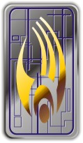
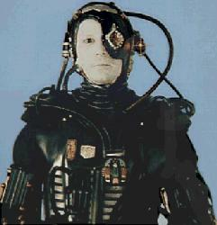
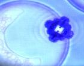

Borg |
|
||||||||||||||
|  | ||||||||||||||
|  |
Umanoidi cyborg molto potenti il cui mondo di origine si trova nel quadrante
Delta; le menti dei Borg sono costantemente in contatto le une con le altre
tramite un sofisticato network subspaziale per formare un'unica coscienza
collettiva, il collettivo Borg. Ogni Borg è equipaggiato con un set di hardware
differente che gli permette di compiere lavori ben specifici.
I Borg sono i responsabili dell'annientamento quasi totale della razza
El-Auriana nel XXIII secolo, non si sa nulla
dell'attività dei Borg prima di tale data; i Borg erano comunque in grado di
assimilare altri mondi nel XXI secolo.
I Borg non assimilano tutte le specie che incontrano, ma solamente quelle che
possono apportare delle migliorie alla loro conoscenza.
L'atmosfera delle astronavi dei Borg è caratterizzata dalla presenza di
particelle tetrioniche (Infinite Regress).
In caso di necessità, i Borg sono in grado di assumere cibo come gli umanoidi
per il sostentamento (Survival Instinct).
La rianimazione autonoma di un drone avviene secondo questo ordine: battito
cardiaco, respirazione, attività cerebrale (Regeneration).
Un danno al nodo corticale, localizzato nella zona frontale destra del cranio di
un drone borg, impedisce il corretto interfacciamento con l'alcova per la
rigenerazione (Imperfection).
Cronologia
2365 - Primo incontro di
una nave Federale con i Borg. L'Enterprise
è stata scagliata da Q in un punto distante 7.000 anni luce
dalla rotta precedente, nel cuore del quadrante Beta, dove ha incontrato un
vascello Borg. In seguito a questo breve incontro, la Federazione ha iniziato la
messa a punto di un piano di difesa da un'eventuale invasione Borg.
2366/2367 - I Borg sono
entrati nel territorio federale, facendo rotta verso la
Terra, dopo aver distrutto la colonia New
Providence di Jouret IV. Questo attacco
è avvenuto molti mesi prima rispetto alle previsioni degli strateghi federali ed
ha colto la Federazione alquanto impreparata. Il Tenente Comandante Shelby,
membro della commissione che stava preparando il piano di difesa, è stata
incaricata di coordinare la difesa contro i Borg. Per far fronte all'invasione,
la
Flotta Stellare ha ammassato circa 40 navi a Wolf 359; ma la nave Borg,
confrontatasi con l'Enterprise,
ha fatto prigioniero il capitano Jean-Luc
Picard, al quale sono stati innestati alcuni impianti che lo hanno portato
ad identificarsi come Locutus. In seguito, grazie alle conoscenze strategiche di
Locutus/Picard assimilate nel collettivo,
la nave Borg ha sbaragliato le difese della
Flotta distruggendo 39 navi e
uccidendo 11.000 persone. In un ultimo disperato tentativo, l'equipaggio dell'Enterprise
è riuscito a catturare Locutus e, analizzando i protocolli di comunicazione dei
Borg, è riuscito a bloccarne l'attività. I Borg, accortisi dell'intrusione,
hanno autodistrutto la nave.
2368 - Ritrovata in
territorio federale presso l'ammasso Argolis una nave scout dei Borg che aveva
compiuto un atterraggio di emergenza. L'unico superstite è stato soccorso dall'Enterprise,
curato, e gli è stato dato il nome di Hugh. Durante la degenza sull'Enterprise,
Hugh, sconnesso dal collettivo, ha iniziato a sviluppare un senso di
individualità che si è poi trasmesso a tutto il collettivo, una volta che Hugh è
ritornato con la propria specie.
2370 - In risposta ad una
chiamata di emergenza dell'avamposto Ohniaka 3, l'Enterprise
si trova a confrontarsi con una nave sconosciuta, che si rivela essere una nave
di Borg infettati dal senso di individualità trasmesso da Hugh. Ben
presto viene scoperto che, approfittando del momentaneo disorientamento del
collettivo, Lore ha preso il comando dei Borg;
Lore riesce a convincere
Data a
mettersi al proprio fianco al comando del collettivo. Si scopre in seguito che Hugh, tornato in contatto con il collettivo aveva infettato i compagni con il
senso di individualità appreso sull'Enterprise,
la qual cosa ha distrutto la struttura di comando della civiltà Borg. L'attacco
è stato sventato grazie ad un gruppo di dissidenti Borg, tra cui figurava anche
lo stesso Hugh, che ha aiutato i federali a disattivare
Lore. Dopo questa
azione, non si è più saputo nulla della fazione individualista dei Borg.
2373 - I Borg lanciano una
nuova offensiva contro la Terra; benché la
Federazione riesca a fermare il nuovo attacco, una piccola sfera borg riesce a
sfuggire e, aprendo un vortice temporale, si rifugia nel
2063, pochi giorni prima che
Zefram Cochrane compia il primo viaggio a velocità warp con l'intento di
impedire la buona riuscita dell'esperimento. Il pronto intervento dell'Enterprise
riesce ad impedire che la missione dei Borg abbia successo e, in seguito allo
scontro, viene distrutta anche la Regina Borg. Contemporaneamente, i Borg
tentano di assimilare la Specie 8472 che vive in uno
spazio fluido extradimensionale. Il tentativo fallisce e la reazione della
Specie 8472 non si fa attendere: migliaia di cubi e
centinaia di mondi Borg vengono distrutti da una serie di attacchi a sorpresa.
Solo una cooperazione tra i Borg e la
Voyager riesce a fermare
l'attacco e a ricacciare la Specie 8472 nello spazio
fluido.
Struttura
Il collettivo Borg sembra operare con il principio della mente di gruppo, con
ogni individuo collegato al collettivo attraverso un network subspaziale. Non si
sa nulla riguardo alle procedure decisionali o ai metodi di assegnamento dei
compiti ai singoli membri del collettivo. La struttura di comando è suddivisa in
tre sottostrutture: Comunicazioni, Navigazione e Difesa; è stato osservato un
gran livello di ridondanza nella struttura di comando, che impedisce la
dipendenza dalle funzionalità di un singolo membro e che permette il
mantenimento delle funzioni anche in caso di gravi perdite. I Borg sono
collegati ad un potente campo neuroelettrico continuo, capace di riparare o
rigenerare ogni componente danneggiato di un Borg ferito (Unity).
I Borg non hanno nessun tipo di religione, ma la
particella Omega (nota ai Borg come Particella 010) provoca in loro qualcosa
di simile alla riverenza.
Un drone su 1.000.000 è affetto da una mutazione che gli permette di vivere
nell'Unimatrice Zero durante la rigenerazione (Unimatrix Zero).
Tecnologia
Non si sa molto dell'effettivo livello tecnologico dei Borg, tranne ciò che è
stato osservato durante i combattimenti.
È oramai assodato che i Borg utilizzano condotti di transwarp per spostarsi, che
permettono di viaggiare a velocità maggiori della media delle astronavi
federali. Il vascello borg standard sembra essere quello a forma cubica. Non si
sa se la nave dei dissidenti Borg incontrati nel
2370 sia uno dei modelli
standard, oppure una nave costruita dai dissidenti stessi.
Gli armamenti dei Borg sono molto potenti ed efficienti. Una caratteristica
fondamentale della difesa dei Borg è l'elevata e rapida capacità di adottare
contromisure per far fronte ad un attacco con un nuovo tipo di arma.
Nei Borg incontrati nel 2365 e
nel 2367 è presente un processore
che permette il collegamento al network del collettivo. Questo chip viene
rimosso dai Borg caduti prima che i corpi vengano vaporizzati per fare in modo
che nulla possa cadere in mano ai nemici.
Nei Borg incontrati nel 2373 è
presente un neuroprocessore che funziona come un chip di memoria con archiviate
tutte le istruzioni ricevute dal collettivo (First
Contact).
I Borg mantengono una sorta di scheda personale di ciascun drone: in
Collective uno dei droni dice a Sette
di Nove di aver consultato il suo datafile per conoscere la
sua storia.
Assimilazione
I Borg incontrati nel
2365 e nel
2367 alteravano geneticamente i
soggetti destinati a divenire Borg ed in seguito venivano impiantati nei
medesimo degli innesti cibernetici ben visibili (Q
Who?).
Per i Borg incontrati nel 2373 il
primo passo del processo di assimilazione è costituito da degli iniettori
tubolari che penetrano sottopelle rilasciando delle nanosonde (vedi foto a
fianco) nel flusso
sanguigno. La prima cosa che viene attaccata dalle nanosonde è il sangue,
l'assimilazione è quasi istantanea: vengono aggredite le cellule sanguigne come
un virus, sviluppando successivamente le prime rudimentali componenti
cibernetiche tipiche dei Borg. Le nanosonde provvedono inoltre a collegare il
soggetto al collettivo, preparando l'organismo a meglio ricevere i componenti
hardware (First Contact,
Scorpion).
Specie classificate dai Borg
| 13 | Tuktak/Ku | Book #16: Seven of Nine |
| 116 | Specie di Arturis | Hope and Fear |
| 125 | Specie di una delle regine Borg | Dark Frontier - Part II |
| 149 | La loro conoscenza medica è stata utilizzata per riportare in vita Neelix | Mortal Coil |
| 180 | Ferengi | Infinite Regress |
| 218 | Talaxiani | The Raven |
| 259 | Hanno inventato i sequenziatori di rigenerazione autonoma | The Gift |
| 262 | Razza primitiva nella cui cultura si parlava in una leggenda di una potente sostanza che poteva bruciare il cielo. | The Omega Directive |
| 263 | Razza primitiva nella cui cultura era presente una leggenda di una potente sostanza che credevano si trattasse di una goccia di sangue del loro creatore. | The Omega Directive |
| 312 | Hanno sviluppato una tecnologia di flusso in grado di creare una barriera di energia non rilevabile dai sensori convenzionali. | Natural Law |
| 329 | Kazon | Mortal Coil |
| 407 | Lennli | Book #16: Seven of Nine |
| 521 | Shivoliani | Survival Instinct |
| 571 | Specie di P'Chan (1) | Survival Instinct |
| 689 | Norcadiani | Ashes to Ashes |
| 1811 | I membri di questa razza non sopravvivono all'assimilazione | Book #16: Seven of Nine |
| 2461 | Brunali | Child's Play |
| 2822 | Razza di opportunisti | Book #16: Seven of Nine |
| 3259 | Vulcaniani | The Raven |
| 4228 | Hazari | Think Tank |
| 5174 | Hunters | |
| 5618 | Umani | Dark Frontier - Part II |
| 5973 | Razza formata da particelle multispettrali originaria del Raggruppamento Galattico 8 | The Haunting of Deck Twelve |
| 6291 | Yridiani | Equinox - Part I |
| 6339 | Infinite Regress | |
| 6961 | Ktariani | Dark Frontier - Part II |
| 8472 | Razza originaria dello spazio fluido | Scorpion |
| 9341 | Razza non umanoide del quadrante Beta impossibile da assimilare | Star Trek: Armada |
| 10026 | Razza umanoide le cui armi riescono a penetrare gli scudi Borg | Dark Frontier - Part II |